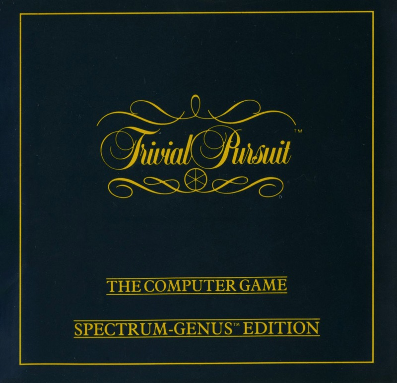
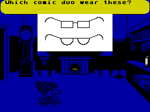
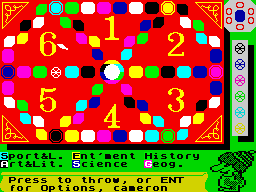

Trivial Pursuit


{kind=link}

| Publisher: | Domark |
| Price: | £14.95 |
| Year: | 1986 |
| Source: | CRASH, Issue 33 |

If for some strange reason you didn’t get a copy of the board game Trivial Pursuit last Christmas then fret no longer. Domark have just brought out Trivial Pursuit — The Computer Game! It’s based very faithfully on the original board game with a few additions and adaptations for the computer.
Like the board game, the basic idea is for players to travel around the board answering questions and trying to collect six wedges, one for each subject. Instead of throwing dice, when a player has a go the fire button must be pressed to release a dart which lands in a numbered section of the screen. The player can then move his or her counter to the highlighted space on the board. Once a player’s token lands on a square a question is asked.

asked during Domark’s conversion
of Trivial Pursuits
Well, the question isn’t actually asked by the computer but instead by a very cute little character called TP. TP dons different caps depending on which subject you are attempting. Questions in each subject can be straightforward text, graphical or musical, and when your choice is made, the little master of ceremonies scampers across to the school room and fires the question at you. TP is an agreeable little chap and is full of congratulations if you answer correctly and full of commiserations if you don’t. There’s no typing in to do — shout out the answer before the time limit expires and you are asked whether you got the correct answer or not. Keying Y for yes or N for no allows the game to progress.
An option menu heads up the game. The first thing to do is enter the names of the people playing, which governs the order of play. A game can be continued or restarted. To make things just that bit more competitive you can alter the amount of time available for answering a question. The real star of the show is TP, but he can be sent to bed if you want a bit of peace and quiet — after all his job is very tiring! You can also turn the sound down if you’re planning on playing late into the night and don’t want to keep the neighbours up.
Even though there are lots of questions in the basic game, eventually you will have attempted them all. When this happens, a new block of questions can be loaded from the second cassette in the package — and further cassettefuls of questions are promised.

lobbed the dart on Cam’s behalf and
the lucky fellow is going to get a six!
The screen layout is very similar to actual board game. There are six sections, each representing the different question subjects which are Art and Literature, Science, Geography, History, Sport and Leisure and Entertainment. At the top of the screen in the right hand corner a chart shows how many wedges each player has won. When a set of six wedges has been collected the aim is to try to get to the centre of the board and complete the game by winning.
As in the board game, a player can only compete for a wedge when the counter has been landed on one of the subject headquarters. In the schoolroom TP asks you questions. A clock shows you how long you’ve been playing and a candle reveals how much time is left to answer the current question.
One feature on the computer game that isn’t present in the tabletop version is the score board which keeps track of each player’s performance and can be consulted at any stage to see how everything’s going and who’s currently in the lead.
Now, which sport was it in which there was an outcry when skirts were raised...?
CRITICISM
“Surely there isn’t anyone out there who hasn’t played the board game? Everyone who has ought to get into the computer version pretty quickly — it’s an excellent game. The most obvious problem of the questions occurring more than once in the same game seems to have been avoided quite well, and the option to load in more questions from cassette is there if you feel the need. Graphics are quite good, and though the board game of course has no sound. I think that the Spectrum version would have been better off without any, as some of the tunes are nigh impossible to recognise. Despite this, Trivial Pursuits is an excellent game, and everyone with a combination of brain and Spectrum ought to get a copy of this.”
“Trivial Pursuits seems to be the kind of game that will keep hundreds of families attached to their computers. I’m sure that it will have quite a cult following, but I feel that Trivial Pursuits is the kind of game that you either love or hate! The computer game is an excellent translation of the board version and keeps all the player participation that is so crucial in games of this ilk. The game features lots of useful options like the sound on/off and TP in action or not, and of course the option to load new questions which I felt was necessary if you were going to play the game more than once. TP is a very cute little character, and the way that he changes his hat for different subjects is a nice touch. As board games go, this is the best on the Spectrum, but you’ll have to be a dedicated player to enjoy it, as games can go on for hours if you’re not too clever.”
“Sadly Trivial Pursuits is one game that I have never played as it always seemed to be a bit of a waste of time. If the computer version is anything to go by, the original must be a scream. Graphics and sound are not usually hot points in games of this nature but they have really been made into a large part of this game, I think the success of playing this game largely depends on the people you play with, so if you don’t think you’ll be able to play in a large group you shouldn’t really cough up the fifteen quid that Domark are asking for it.”
COMMENTS
| Control keys: | Redefinable: up, down, left, right, fire |
| Joystick: | Kempston |
| Keyboard play: | No problems |
| Use of colour: | Tidy |
| Graphics: | Clear — fine for a boardgame |
| Sound: | Basic, nothing superb |
| Skill levels: | One — but additional question tapes will be available |
| Screens: | Main board screen plus menus and ‘visual’ questions |
| General rating: | A very competent conversion of a classic game |
| Use of computer: | 88% |
| Graphics: | 87% |
| Playability: | 92% |
| Getting started: | 91% |
| Addictive qualities: | 92% |
| Value for money: | 86% |
| Overall: | 91% |